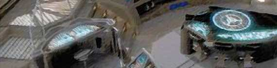
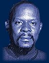
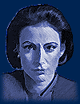
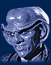

|





|
Durante as comemoraes dos 25 anos de Jornada, em 1991, os executivos da Paramount decidiram dar uma "irm mais nova" Nova Gerao, que j era planejada ento para ir para a tela grande ao final de sua stima temporada, em 1994. Aproveitando-se do desejo dos chefes do estdio de diferenciar as duas sries, Michael Piller (co-criador de DS9 ao lado de Rick Berman) promoveu uma verdadeira revoluo no seio da franquia, inovando quanto aos personagens (na caracterizao e em sua dinmica), ao cenrio principal da srie, aos temas tratados e s estratgias de abordagem desses temas. As duas primeiras temporadas da srie foram relativamente bem-sucedidas criativamente (definitivamente frente dos esforos iniciais de A Nova Gerao), em particular a segunda temporada (especialmente quando comparada abismal concorrncia da ltima temporada da turma de Picard e cia.), que se encerrou com uma bela seqncia de oito episdios de inegvel qualidade. A terceira temporada levou a uma certa "crise de identidade" da srie, em que se mostrava difcil encontrar a melhor forma de utilizar (em diversos nveis) a recm-introduzida nave estelar Defiant no formato pr-existente. Da mesma forma, a presso do estdio por histrias que no tivessem nada a ver com Bajor parecia ir contra boa parte do que de melhor a srie fez durante as suas duas primeiras temporadas. A qualidade caiu em meio a este cenrio de incerteza. Anlises superficiais teimam em tentar fazer corresponder uma "melhora" na srie introduo da nave estelar Defiant no comeo da terceira temporada ou entrada de Worf (e a retomada da participao mais presente dos Klingons em geral), no incio da quarta. Na realidade o fato que representa o verdadeiro "divisor de guas" criativo para a srie foi a consolidao de Ira Steven Behr (que iria se tornar o verdadeiro mentor de DS9, e que estava na srie desde a sua pr-produo) como produtor-executivo com plenos poderes, no lugar de Piller. Tal fato se deu durante a produo do legendrio episdio duplo (e talvez o episdio central da srie) "Improbable Cause" e "The Die Is Cast", da terceira temporada. Melhor "estria" impossvel. Sob a batuta de Behr, a srie atingiu o seu potencial mximo. A sua quarta temporada foi possivelmente a melhor temporada de Jornada desde as duas primeiras temporadas da Srie Clssica. Com uma qualidade sustentada semana aps semana indita para a marca. A quinta temporada permanece como o melhor momento da srie e provavelmente de toda a franquia de Jornada nas Estrelas. A qualidade mdia por episdio atingida se juntava a um senso de propsito nunca antes visto dentro do universo trekker. As duas ltimas temporadas trataram da guerra com o Dominion e desafiaram cada preceito do que havia se convencionado chamar de Jornada nas Estrelas anteriormente. O arco de seis episdios que abre a sexta temporada e o de dez episdios (o conhecido "captulo final") que fecha a srie atingiram extremos nveis de sofisticao, se tornando memorveis para os fs. Com isso tudo a srie passou a ser a "queridinha" da mdia (especializada ou leiga) no que diz respeito s sries de Jornada. E inmeras publicaes importantes a saudaram como a "melhor de todas" aps o seu final, claramente e na capa de suas respectivas edies comemorativas. largamente conhecido o caso da "TV Guide" (a "Bblia" da TV americana), que disse o seguinte sobre a srie: "quando uma dia olharmos para trs (e assim o faremos), vislumbraremos a mais bem atuada, escrita, produzida e sob qualquer possvel ponto de vista a melhor de todas as Jornadas".
Elenco: |